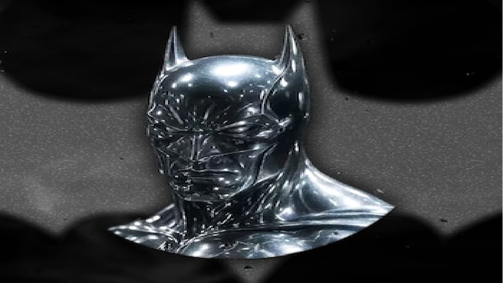

Quem é o Batman?
Batman (Bruce Wayne) é um personagem da DC Comics que atua como Justiceiro de Gotham. Ele não tem superpoderes: Sua força está em treinamento, inteligência e recursos (ou seja, rico).
Nas histórias, Gotham costuma representar problemas sociais reais:
Desigualdade, Corrupção e Violência Urbana.
Muitos quadrinhos usam o Batman como forma de crítica social
mostrando como:
➪ Decisões políticas
➪ Interesses econômicos
➪ Falhas nas instituições
➪ Autoritarismo
Afetam o cotidiano das pessoas
especialmente nas periferias.
Galeria
